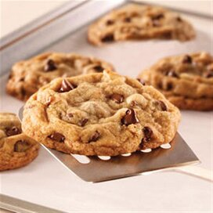

Chewy Chocolate Chip Cookies

This delicious recipe creates big ooey gooey chewy chocolate chip cookies. Perfect for dunking in a glass of cold milk.
Ingredients
- 10 oz All Purpose Flour
- 1 tsp Baking Powder
- 1/2 tsp Salt
- 12 TBSP Butter, melted
- 7 oz Brown Sugar
- 3.5 oz White Sugar
- 1 egg plus 1 egg yolk
- 12 oz chocolate chips
Steps
- Preheat oven to 350 degrees
- First, whisk all of the dry ingredients in a medium bowl
- Then, melt the butter and whisk vigorously with both sugars until lighter in color.
- Next, whisk the egg and egg yolk until thoroughly combined
- Finally, stir in the dry ingredients and the chocolate chips. Mix until no dry ingredients remain.
- With a large cookie scoop or a 1/4 cup measuring cup, portion out cookie batter so evenly spaced on baking sheets.
- Bake until lightly golden brown, about 10-12 minutes.
Return Home